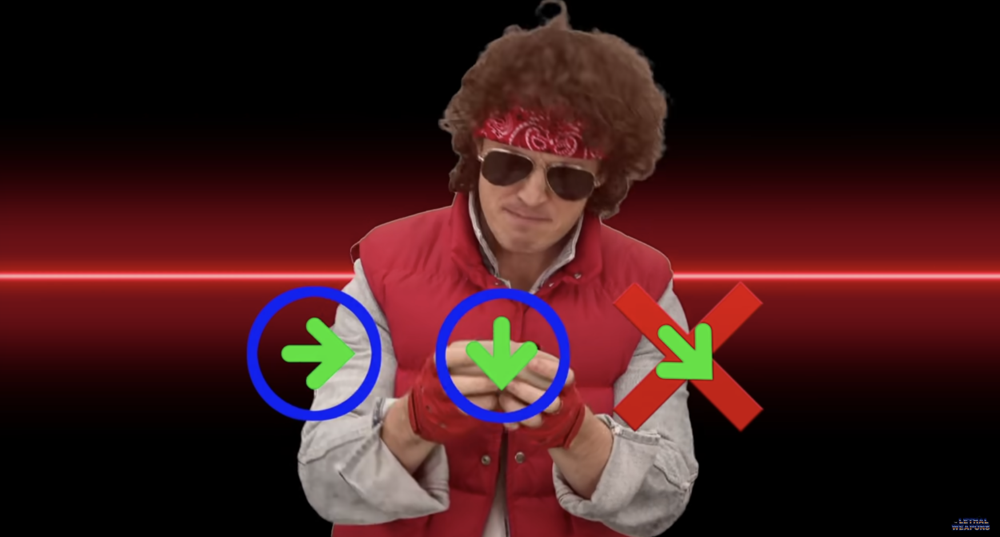
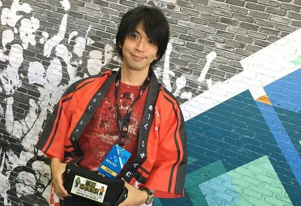

御宮間ブログ
御宮間です 今日は格ゲーのBGMについて話そうと思います
まず格ゲーのBGMの話で外せないのはスト2のケンのテーマ
現代に至るまで様々なアレンジをされながら受け継がれてきました。
個人的にはスト4アレンジはかなり好みです あとはポンズの昇竜拳がでない

他ので言えばバイソンのテーマが好きですかね こちらはスト5アレンジがかっこいいです
もうちょっとで外したところで行くと3rdのアレクなんかも印象的ですね
さてSFはこんな感じですが、ギルティのBGMは？という話になるともう終わりが見えません
圧倒的疾走感 XXミリア対ザトー「Still in the dark」
異常な海外人気を誇るチップのテーマ「Suck a Sage」
外伝作品のBGMにも関わらず人気投票堂々の一位「Holy Orders(Be Just Or Be Dead)」
イベントで流れれば大合唱が始まる最新作GGSTメインテーマ「Smell of The Game」
私が個人的に大好きな闇慈のテーマ「風雅(Xアーケード)」アサシン対アサシン「Existence」
サビのコーラスが印象的な聖ソルのテーマ「Get down to business」
いやもうメタリカじゃん GGST梅喧「Miller of The World」
エレキがかっこよすぎるXカイ対ソル「No Mercy」
タイトルがもう好き X同キャラ戦「Fatal Duel」
駆け抜けるような感動のスタッフロール「Primal Light」
というように、あげたらキリがありません
この素晴らしいBGMを生み出してきた石渡太輔氏を僕たちは畏敬の念を込めてこう呼びます
「石渡神」「神渡神輔」「ミギー神」「カミー」

昔は実機で遊ぶかCDを買うかというところでゲーム音楽を聴く手段は多くなかったと思いますが、
今ではサブスクサービスなどで手軽に楽しむことができます
みなさんも是非、お気に入りのBGMを見つけてください